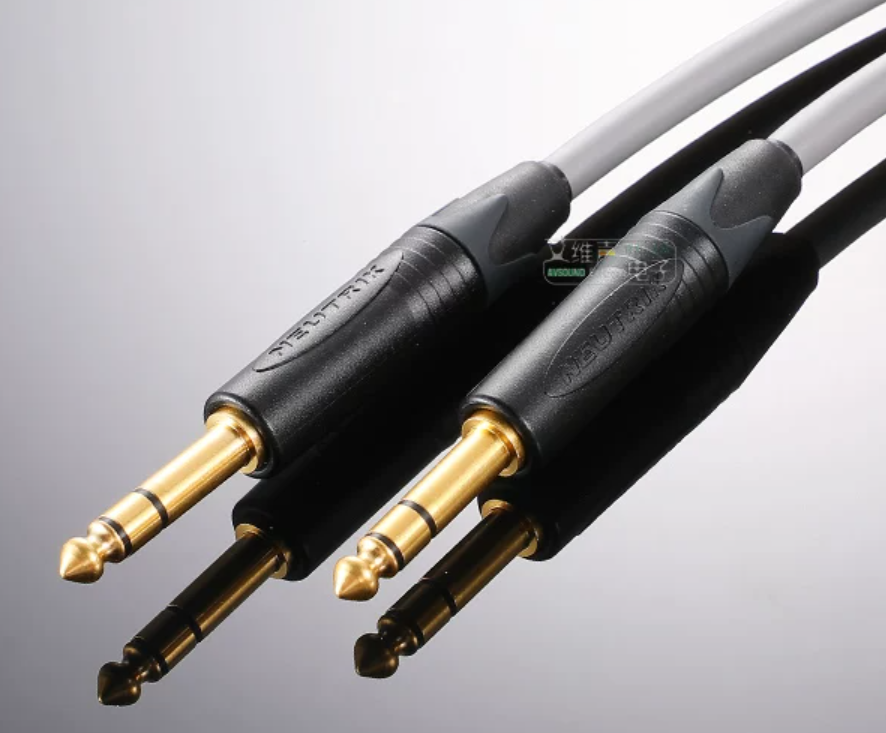
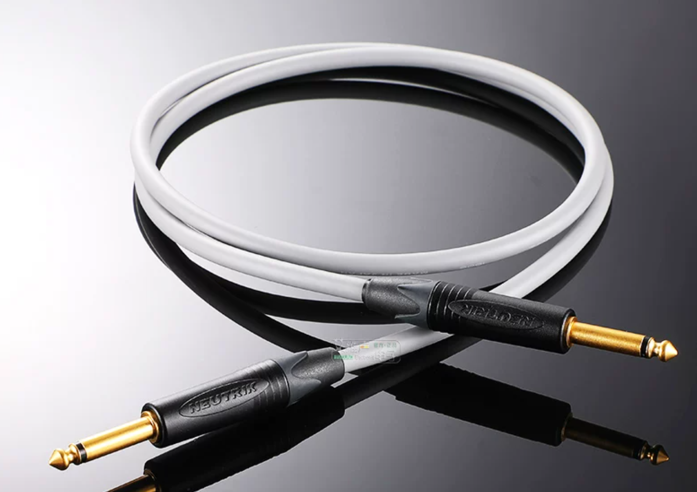
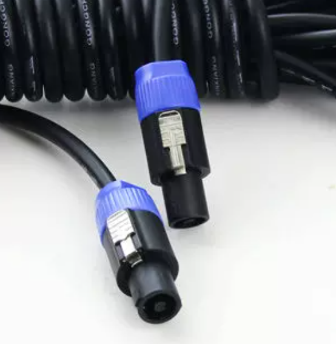

P01 线材

线材的认识与管理收纳
先分清哪根线干嘛，再学会别让线打结绊倒人。
1认识常见线材
现场最常用的就这几种，记住它们的外形和用途即可。
🎙️
XLR 卡侬线
抗干扰的「平衡线」，麦克风/主输出常用。分公头（3针）与母头（3孔）。

🔩
TRS 大三芯
6.35mm 三圈「平衡线」，插头为公头。乐器、监听、输出常用。

🎸
TS 大二芯
6.35mm 两圈「非平衡线」，电吉他/键盘等短线用。

🔊
功放线（电源线+信号线）
功放供电用电源线，声音到音箱用信号线（图：带锁扣的 Speakon 线）。
2怎么看「公头 & 母头」（重要！）
凸出=公头、凹陷=母头；输出端用公头、输入端用母头，避免带电针脚碰金属。
凸=公、凹=母，公去插、母被插。一根 XLR 线一头公、一头母。
💡
一句话分：三根/三圈=平衡（抗干扰、长线）；两圈=非平衡（短线、家用）。现场尽量用平衡线。
3怎么管理线材：理线 & 绕线
⊕ 绕线手法（正反绕 / 8 字绕法）
正反交叉着绕，线不自动打结，一拉就开。别硬拽、留余量、接头处别勒死。
⊕ 上电前 \ 收工后
- 接线前摆顺线、两头贴标签编号。
- 横穿走道用扎带 / 盖线槽固定，防绊倒。
- 收工按编号收回，别随手一丢。
⚠️
安全提醒散线=绊倒隐患。横穿走道要贴地固定，接头保持干燥清洁。